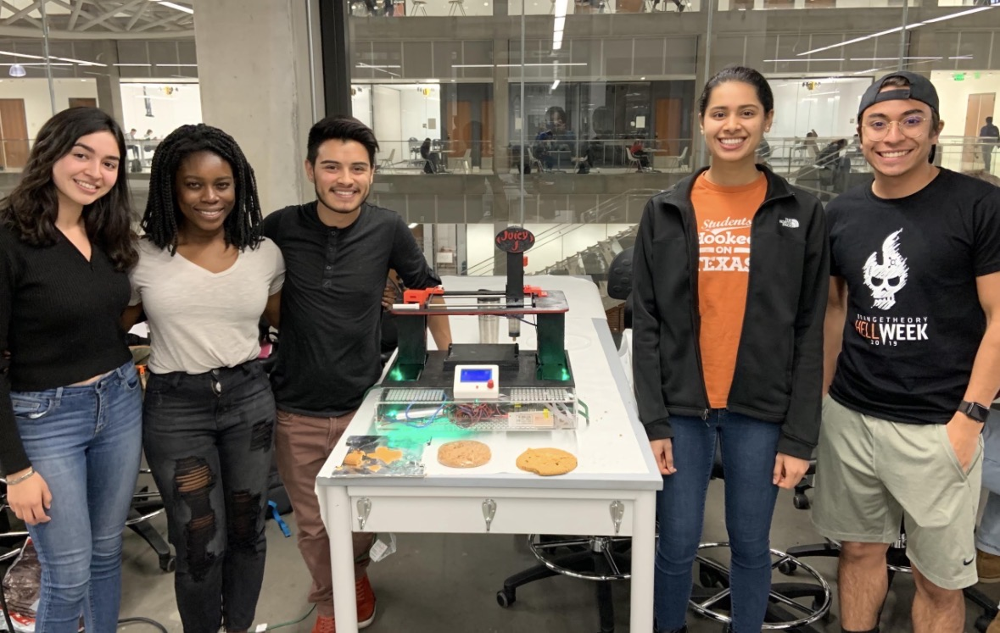
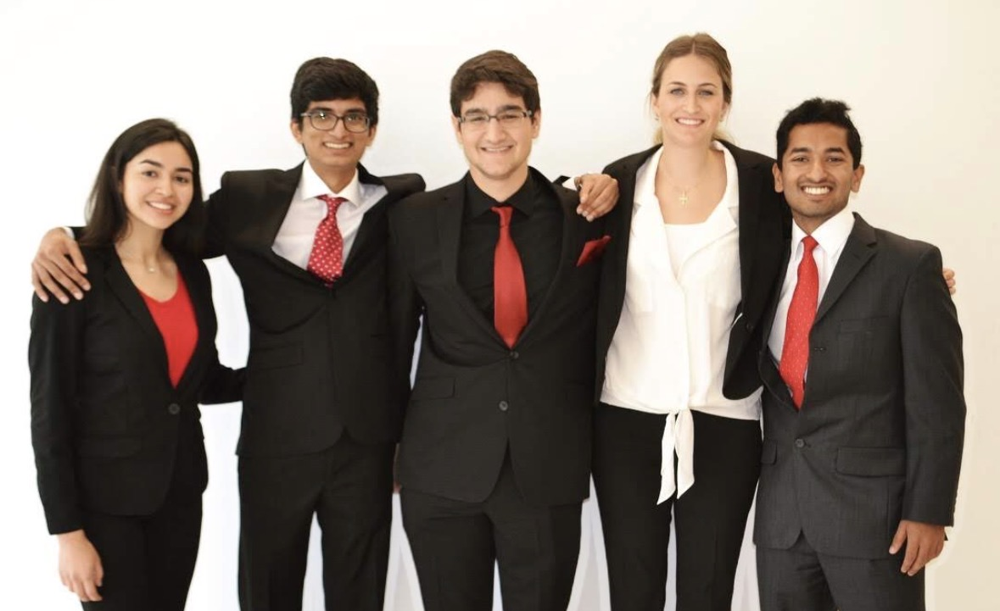
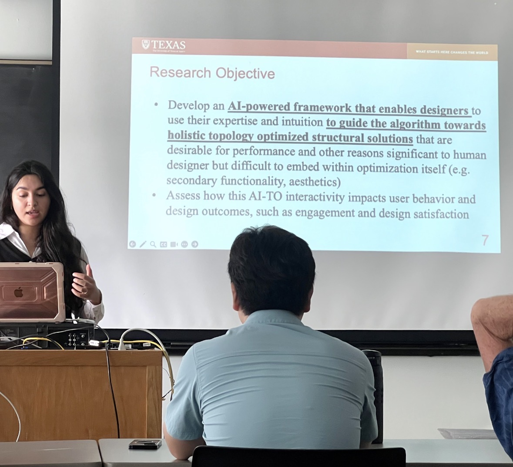

About Me
The Longer Version
I studied mechanical engineering to build products that solve problems for people. Throughout my undergrad, I ran the full product development lifecycle, from customer discovery to launch, on hardware projects like a 3D food printer. I realized what I loved most wasn't the building, but the conversations before it: translating what people needed into requirements the team could act on. Hardware sharpened that skill because getting customer needs wrong the first time is expensive: there's no affordable do-over once you're in manufacturing.
After a few computer science courses, I realized I was just as drawn to software products, an interest that carried into my PhD. There, I built an AI-powered design application end to end in Python, from training the generative AI models that powered it to building the interactive tools that let engineers edit structural designs in real time. That application became the research instrument for a large human-AI collaboration study (more on that in the case above), and eventually the basis for a business case: partnering with industry to operationalize the framework for live customers and securing $4M in funding in the process.
Along the way I picked up a Business Foundations Minor, which keeps me anchored to outcomes that matter to a company: translating user needs into product strategy, or helping a team see why a design decision will move a metric. I've tested that instinct on my own too, launching 3 products that led to startup pitch competitions and $100K in sales.
Right now I'm looking for a role where user research has a real seat at the table and design decisions are made with intention. If that sounds like your team, I'd love to talk.

B.S. — Mechanical Engineering
With my capstone team and our 3D food printer

Minor — Business Foundations
With my marketplace simulation team, our capstone project


PhD — Human-AI Interactive Design
With my advisor Dr. Seepersad at my last IDETC conference, then presenting that AI-powered framework at my dissertation defense